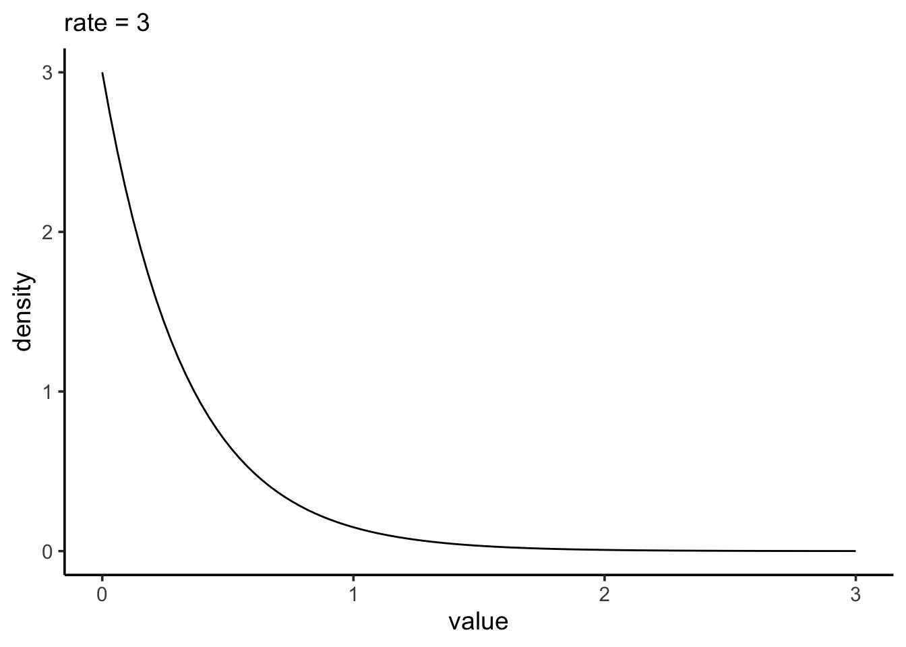

Iteration and Functions
0. Intro
You’re going to be using tidyr, purrr, dplyr, and more today. Might want to start the head of your script with just library(tidyverse) so you don’t have to worry too much. Set a ggplot theme if you want!
1. Visualizing the Exponential distribution
The normal distibution is fun, but let’s play with another one! The exponential distribution is a continuous distribution that is bounded at 0 and has an infinitely long tail. It’s skewed to 0, and takes a rate as it’s argument to determine its shape.
1a. Make a tibble that has two columns. The first is a sequence of 200 evenly spaced numbers between 0 and 4. Let’s call that column x. The second is 4 values for rate - c(0.2, 0.5, 1, 2, 4). Let’s get all possible combinations of the two (some function in tidyr will do….)
1b. Now, how do you make those sweet sweet probability densities? Why, with a d*() function! In this case, dexp(). Make a column that gets the probability density of the exponential distribution for each value of x and rate. You might want to look at the help file to see how to use dexp().
1c. Plot how the density of the exponential changes with rate using the tibble you just generated. How do things change with rate?
2. Precision and Sampling the Exponential
2a. To start to sample, let’s begin by building up a set of parameters that link up with simulations. We are going to explore how rate changes the standard error of different properties from our sample. Let’s start by creating a tibble or data frame that has one column for simulations (1 through 1000) and one column with rates. Let’s use the rates from before - c(0.2, 0.5, 1, 2, 4).
2b. Great! Now simulate your sampling of exponential populations! Assume n = 10. To check yourself, your resulting data frame should be ungrouped and have 50K rows.
2c. Now, for each simulation (and rate!) get the sample mean, median, and SD.
2d. So, how does rate influence the SE of each of these properties? First show with a table and then a plot. One plot with three facets (get your pivot on!) For your table, try out knitr::kable() or the gt package.
2e. Do these results surprise you or are they predictable given the plots of exponential distributions you made in #1?
3. Finish your tidy tuesday! Include a cool plot! And your code!
Impress yourself! Post it to twitter or bluesky and put the link in slack!
Impress yourself more! Put your tidy tuesday code up on github as a gist (http://gist.github.com) and link to it in that post!
Meta 1.
Whew. We covered a lot this week. Sample distributions, sampling distributions, and simulation. How much of this was new to you? How much of it was familiar or at least made sense? How much was totally alien and offputting?
Meta 2.
What are possible uses you could see using simulations for?
Meta 3.
How did your progress through this assignment feel after lab? Did you find yourself speeding up as you went along? Are there things that clicked for you along the way? Lightbulbs going off.
Meta 4.
There are a lot of things that also re-appear this week. ggplot, tidyr and pivoting, dplyr, pipes, and more. Are they becoming old friends? What apsects of them are you still struggling with, if at all?
Meta 5.
How much time did this take you, roughly? Again, I’m trying to keep track that these assignments aren’t killer, more than anything.
Meta 6.
Please give yourself a weak/sufficient/strong assessment on this assignment. Feel free to comment on why.